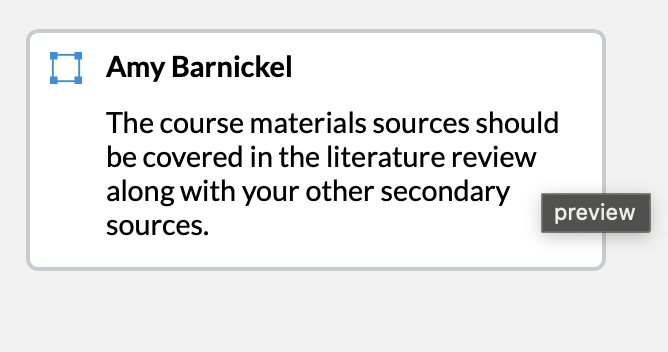

Synthesis
Literature Review
Framing Statement
This page shows my literature review. I synthesized peer-reviewed scholarly sources, along with my vetted course-materials sources, into one conversation about Christianity and digital media, stated a working thesis, and named the gap in the existing scholarship that my own research enters.
Why This Artifact Shows the Outcomes
This artifact shows Research Genre Production because a literature review is its own genre with its own rules: synthesis instead of summary, in-text citations throughout, a working thesis, and a gap statement. I had to learn all of those moves. This artifact also shows Contributing Knowledge because I had to identify a real gap in the existing scholarship (no scholar has close-coded U.S. devotional homepages across multiple decades) and explain how my own work enters that gap.
Document Versions
- ↓ Final Version (Word)Synthesis with a working thesis.
- ↓ Final Version (PDF)
Instructor Feedback
Comments from Prof. Amy Barnickel (Canvas)

How I Revised
I added the course-materials sources into my literature review so they are synthesized alongside my other secondary sources, instead of being left out of the scholarly conversation.